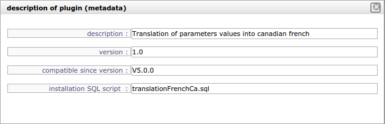

Plug-ins management¶
Plug-ins allows to add non generic features to ProjeQtOr.
Plug-in deployment
- Plug-in will be deployed during installation.
- The result of deployment will be available in the log file (See: Administration console).
Section: Installed plug-ins
This section lists the installed plug-ins.
| Field | Description |
|---|---|
| Name | Plug-in name. |
| Description | Plug-in description. |
| Version | Plug-in version. |
| Deployed date | Deployed date. |
| Deployed on | The version when the module has been installed. |
| Compatible since | Compatibility version. |
Section: Available plug-ins (local)
This section allows to manage local plug-ins.
Available plug-ins list
- The button allows to select plug-in file.
- The file will be uploaded and it will be added in plugin-ins list.
Detail of available plug-ins list¶ Field Description File Plug-in file name. Date File date. Size File size. Plug-in installation
- Click on
to install plug-in.
- Click on
to display the description of plug-in.

Note
- Plug-in is removed from the list after installation.
Section: Available plug-ins (remote)
This section allows to manage remote plug-ins.
Note
- This feature will be available later.